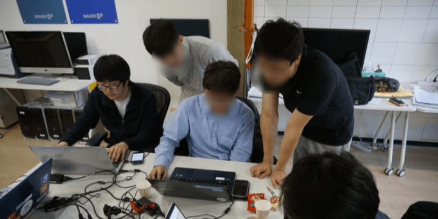

@nemorize Ji Yong, Kim
Email:
jiyong.kim@headercat.com
Tel:
+82 10-5954-2048
소프트웨어, 하드웨어, 디자인, 마케팅 등 분야를 가리지 않고 문제를 해결하는 것에 집중합니다. 각자가 경험하는 문제점을 파악하고, 이를 자연스럽게 해결할 솔루션을 만드는 사람. 그것이 나를 제일 잘 설명하는 표현입니다.
새로운 내용
게시글
짧은글
- 스레드 앱을 삭제했다. 아니, 스레드 앱을 삭제한지 꽤 됐다. SNS 서비스들의 컨텐츠...
- 최?근 브라우저단 JS에 추가된 기능들 중 제일 만족스러운건 역시 브라우저에서 esm을 쓸...
- 우린 얼마전에 스플래시 화면을 뺐다. 정확하게는... 기술적으로 아예 빼는건 힘들어서ㅎㅎ;...
구독과 좋아요
새로운 게시글이 올라오면 본 블로그의 깃허브 레포의 Release 기능을 통해 알려드립니다. 아래 버튼을 통해 레포를 확인하고, Star 버튼을 눌러주시면 깃허브 홈 화면의 피드에서 새 게시글을 바로 확인할 수 있습니다.
내 정보
취미
- 맛있는 음식을 먹고, 요리하는 것을 좋아합니다. (그러나 건강상의 문제로 잘 먹지 못합니다.)
- 웹소설을 좋아합니다. 장르를 가리지 않지만, 비지시즌에는 가벼운 작품 위주로 찾아봅니다.
- 귀여운 고양이 구리와 함께하고 있습니다.
음악
- 시끄럽지 않은 노래를 좋아합니다. 잔잔하거나, 신나더라도 절제된 노래를 주로 듣습니다.
- JPOP, KPOP, POP 순서로 자주 듣습니다. 한번 꽂힌 곡은 몇주씩 반복해 듣습니다. 최근 아래 곡들을 특히 자주 듣습니다.
- 全力少年 - SUKIMASWITCH
- 恋におちて-Fall in love- - 小林明子
- 創聖のアクエリオン - AKINO
건강
- 2형 당뇨가 있습니다. 맛있는 음식을 정말 좋아하지만, 건강한 식단을 유지하고 음주를 최소화하고 있습니다.
지역
- 울산광역시에서 태어나 울산에서 학창시절을 보냈고, 울산에서 상근예비역으로 군 복무했습니다.
- 이후 2025년 현재 여자친구와 함께하기 위해 약 5년째 광주광역시에 거주하고 있습니다.
언어
- 한국어가 모국어입니다. 영어와 일본어를 듣고, 읽고, 쓸 수 있습니다.
- PHP와 Typescript를 자주 사용합니다. 필요에 따라 Go, Kotlin, Swift를 함께 사용합니다.
- 들여쓰기로 블럭을 구분하는 Python과 그 유사 문법의 언어들을 좋아하지 않습니다. 꼭 필요한 상황이 아닌 이상 사용하지 않습니다.
- 더 이상 Ruby를 사용하지 않지만, 알만툴(RPG Maker XP)에서 처음 접한 Ruby에 꽤 좋은 기억을 가지고 있습니다.